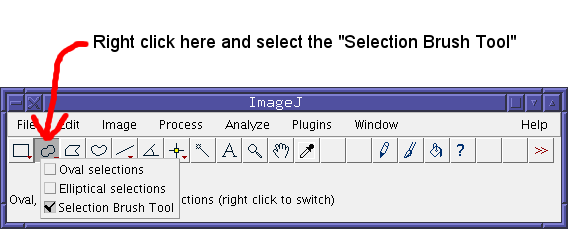

1. Instructions for using 3B
Analysing some new data
1. Load an image stack
Some test data can be loaded via Plugins > Three B > Load test data
The results should look something like this:
The image must contain significant areas which are not the thing you want to
analyse. This is because 3B has to be able to estimate the background level and noise.
A good guide is that anything larger than 50×50 will probably be fine.
2. Select a region to analyse
Select a region to analyse. Smaller regions analyse much faster, but you should leave a border
of at least one or two pixels between the edge of the region and the pixels of interest. A
large region can be cut up into several smaller regions if necessary.
Generally, the selection brush is the most useful tool for selecting regions:

Then paint the area of interest. The results should look like this:
3. Run 3B analysis from the plugin menu
Activate the plugin from the menu Plugins > Three B > Three B. If you are reading
this tutorial, you almost certainly do not want to select the advanced option. If you go for
advanced options, it is easy to create meaningless results, or even crash ImageJ.
Set the pixel size and FWHM of the microscope. You can choose an initial number of spots, but the
default value will probably be about right:

If you enter values which are outside the reasonable range of parameters, then
the 3B plugin will highlight the bad value and give an error message:
On pressing save, you will be invited to save the raw output of 3B from which a
high resolution image can be reconstructed. This file is not an image but it can
be loaded by the 3B plugin.
On pressing OK, the 3B plugin will start analysing the data.
4. Viewing the data
The 3B plugin will bring up its control panel:
The control panel shows a live view of the reconstruction as it is running,
and shows you which iteration the system is on. The control panel allows
you to set the pixel size and FWHM of the reconstructed image. A larger number
of iterations will allow you to use a smaller FWHM.
The 3B analysis will run for 1200 iterations which is almost certainly more than
enough. The 3B run can be stopped when the reconstruction does not improve further.
You do not need to save the data once it is stopped, since the output file is written
continuously during the analysis.
It is recommended that 3B is run for 200 iterations. At this point the export button
will change from red to grey.
5. Saving images, applying colourmaps, etc
At any stage during a 3B run or afterwards, you can press the "Export..." button to
get an ImageJ image. Once you have this image, a colourmap can be added
(for example Image > Lookup Tables > Fire) and the brightness and
contrast can be adjusted (Image > Adjust > Brightness/Contrast) to
enhance the clarity of the results. For convenience, the 3B plugin provids the
glow/hot colourmap (shown here) under Plugins > Three B > Glow LUT
You also may wish to add a scalebar (Analyze > Tools > Scale bar...).
The image will already be calibrated to the correct pixel size.
2. Loading an old analysis
Load an old analysis using Plugins > Three B > Open 3B run. Some sample
data has been provided with the plugin and can be loaded with Plugins > Three B > Open test data results.
The view dialog is almost identical to the control panel for running 3B, and
can be used in exactly the same way. For further instructions, see
1.4 Viewing the data.
Note that you have to specify the pixel size when you load data from a file.
This is because 3B uses the FWHM in pixels (not nm), so it does not make use
of or record the pixel size in nm.